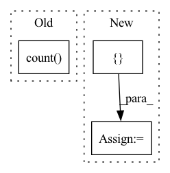

Pattern ID :24105
Before Change
for col in df.columns:
df2[col] = df[col].astype("float64").pow(2)
vals = {
"df-count": df.count() .to_frame().transpose(),
"df-sum": df.sum().astype("float64").to_frame().transpose(),
"df2-sum": df2.sum().to_frame().transpose(),
}After Change
vals["count"][name] = [column.count()]
vals["sum"][name] = [column.sum().astype("float64")]
vals["squaredsum"][name] = [ column.astype("float64").pow(2).sum()In pattern: SUPERPATTERN
Frequency: 3
Non-data size: 3
Instances Fragment ID: 74816164
Project Name: nvidia/nvtabular
Commit Name: 5c85dfdee22edd1cd70f0c657f228f51f83e128d
Time: 2021-10-25
Author: github@benfrederickson.com
File Name: nvtabular/ops/moments.py
M Class Name: AnonimousClass
N Class Name: AnonimousClass
M Method Name: _chunkwise_moments(1)
N Method Name: _chunkwise_moments(1)
M Parent Class:
N Parent Class:
M File Name: nvtabular/ops/moments.py
N File Name: nvtabular/ops/moments.py
M Start Line: 65
M End Line: 75
N Start Line: 67
N End Line: 75
Before Change
// split dataset
valid_idx = int(ds.count() * valid_split_factor)
test_idx = int(ds.count() * test_split_factor)
train_dataset, validation_dataset, test_dataset = ds.random_shuffle(
seed=rand_seed
).split_at_indices([valid_idx, test_idx])After Change
validation_dataset_pipeline = validation_dataset.repeat()
// datasets and defs generating
datasets = {
"train": train_dataset_pipeline,
"validation": validation_dataset_pipeline
}
feature_defs = {
k: dense_defs * int(v["dense"]) + sparse_defs * int(v["sparse"])
for k, v in feature_def_settings.items()
} Fragment ID: 74816167
Project Name: ryantd/veloce
Commit Name: defa54bbf384285153ce1cf65dcaae9480a8da33
Time: 2022-01-18
Author: xiaoyu.zhai@hotmail.com
File Name: benchmarks/dataset/loader.py
M Class Name: AnonimousClass
N Class Name: AnonimousClass
M Method Name: load_dataset_builtin(4)
N Method Name: load_dataset_builtin(5)
M Parent Class:
N Parent Class:
M File Name: benchmarks/dataset/loader.py
N File Name: benchmarks/dataset/loader.py
M Start Line: 14
M End Line: 67
N Start Line: 54
N End Line: 63
Before Change
// simply list all operations and see what happens...
c0 = c0.append([16, 19])
_ = c0.count()
_ = len(c0)
// _ = c0.ndim
// _ = c0.size
// TODO: do we need copy...After Change
c11 = c10.nlargest()
// print("TRACE", cmds(Scope.default.trace.statements()))
verdict = [
"c0 = torcharrow.scope.Scope._Column(int64, dtype=None, device="cpu")",
"c1 = torcharrow.icolumn.IColumn.append(c0, [13])",
"c2 = torcharrow.icolumn.IColumn.append(c1, [14])",
"c3 = torcharrow.icolumn.IColumn.append(c2, [16, 19])",
"_ = torcharrow.icolumn.IColumn.__getitem__(c3, 0)",
"c4 = torcharrow.icolumn.IColumn.__getitem__(c3, slice(None, 1, None))",
"c5 = torcharrow.icolumn.IColumn.__getitem__(c3, [0, 1])",
"c6 = torcharrow.scope.Scope._Column([True, True], dtype=None, device="cpu")",
"c7 = torcharrow.velox_rt.numerical_column_cpu.NumericalColumnCpu.__ne__(c3, c3)",
"c8 = torcharrow.icolumn.IColumn.__getitem__(c3, c7)",
"c9 = torcharrow.icolumn.IColumn.head(c3, 17)",
"c10 = torcharrow.icolumn.IColumn.tail(c5, -12)",
"c11 = torcharrow.icolumn.IColumn.map(c3, {13: 133}, dtype=Int64(nullable=True))",
"c12 = torcharrow.icolumn.IColumn.map(c3, h)",
"_ = torcharrow.icolumn.IColumn.reduce(c3, operator.add, 0)",
"c13 = torcharrow.velox_rt.numerical_column_cpu.NumericalColumnCpu.sort(c3, ascending=False)",
"c15 = torcharrow.velox_rt.numerical_column_cpu.NumericalColumnCpu.nlargest(c13)" Fragment ID: 74816170
Project Name: facebookresearch/torcharrow
Commit Name: e3ac80f23bb38597fc0a9aba9bb8763a181a4448
Time: 2021-11-05
Author: wxie@fb.com
File Name: torcharrow/test/test_trace.py
M Class Name: TestColumnTrace
N Class Name: TestColumnTrace
M Method Name: test_columns(1)
N Method Name: test_columns(1)
M Parent Class: unittest.TestCase
N Parent Class: unittest.TestCase
M File Name: torcharrow/test/test_trace.py
N File Name: torcharrow/test/test_trace.py
M Start Line: 141
M End Line: 197
N Start Line: 176
N End Line: 194